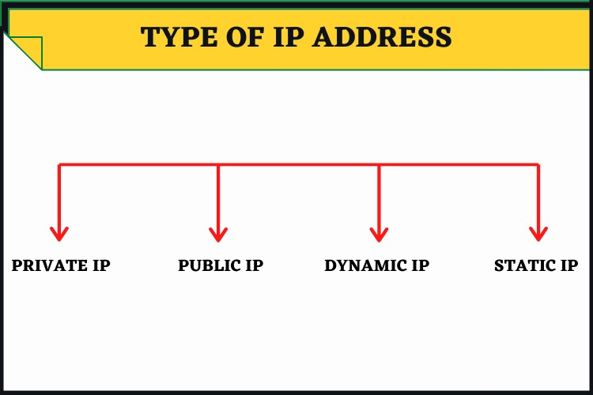

An IP address provides an identity to a networked device. Similar to a home or business address supplying that specific physical location with an identifiable address, devices on a network are differentiated from one another through IP addresses. If I’m going to send a package to my friend in another country, I have to know the exact destination. It’s not enough to just put a package with his name on it through the mail and expect it to reach him. I must instead attach a specific address to it, which you could do by looking it up in a phone book.
Dynamic IP addresses
Static IP
Versions Of IP
- IPv4
Internet Protocol version 4 (IPv4) defines an IP address as a 32-bit number. IPv4 addresses are constructed means it’s able to provide over 4 billion unique IP addresses, However, because of the growth of the Internet and the depletion of available IPv4 addresses. IPv4 addresses are usually represented in dot-decimal notation, consisting of four decimal numbers. IPv4 addresses are written and displayed in human-readable notations, such as 172.16.254.1
- IPv6
A new version of IP (IPv6), using 128 bits for the IP address, was developed in 1995, and standardized as RFC 2460 in 1998. IPv6 deployment has been ongoing since the mid-2000s. IPv6 addresses are written in hexadecimal. IP addresses are usually in 2001:db8:0:1234:0:567:8:1. IPv6 has facilities that automatically change the routing prefix of entire networks, should the global connectivity or the routing policy change, without requiring internal redesign or manual renumbering.
Types Of IP
There are different categories of IP addresses, and within each category, different types.
- Consumer IP addresses
Every individual or business with an internet service plan will have two types of IP addresses: their private IP addresses and their public IP address. The terms public and private relate to the network location — that is, a private IP address is used inside a network, while a public one is used outside a network.
- Private IP Address
Every device that connects to your internet network has a private IP address. This includes computers, smartphones, and tablets but also any Bluetooth-enabled devices like speakers, printers, or smart TVs. With the growing internet of things, the number of private IP addresses you have at home is probably growing. Your router needs a way to identify these items separately, and many items need a way to recognize each other. Therefore, your router generates private IP addresses that are unique identifiers for each device that differentiate them on the network.
- Public IP addresses
A public IP address is the primary address associated with your whole network. While each connected device has its own IP address, they are also included within the main IP address for your network. As described above, your public IP address is provided to your router by your ISP. Typically, ISPs have a large pool of IP addresses that they distribute to their customers. Your public IP address is the address that all the devices outside your internet network will use to recognize your network.
- Public IP addresses
Public IP addresses come in two forms – dynamic and static.
- Dynamic IP addresses
Dynamic IP addresses change automatically and regularly. ISPs buy a large pool of IP addresses and assign them automatically to their customers. Periodically, they re-assign them and put the older IP addresses back into the pool to be used for other customers. The rationale for this approach is to generate cost savings for the ISP. Automating the regular movement of IP addresses means they don’t have to carry out specific actions to re-establish a customer's IP address if they move home, for example. There are security benefits, too, because a changing IP address makes it harder for criminals to hack into your network interface.
- Static IP addresses
In contrast to dynamic IP addresses, static addresses remain consistent. Once the network assigns an IP address, it remains the same. Most individuals and businesses do not need a static IP address, but for businesses that plan to host their own server, it is crucial to have one. This is because a static IP address ensures that websites and email addresses tied to it will have a consistent IP address — vital if you want other devices to be able to find them consistently on the web.
This leads to the next point – which is the two types of website IP addresses. - There are two types of website IP addresses
For website owners who don’t host their own server, and instead rely on a web hosting package – which is the case for most websites – there are two types of website IP addresses. These are shared and dedicated.
- Shared IP addresses
Websites that rely on shared hosting plans from web hosting providers will typically be one of many websites hosted on the same server. This tends to be the case for individual websites or SME websites, where traffic volumes are manageable, and the sites themselves are limited in terms of the number of pages, etc. Websites hosted in this way will have shared IP addresses.
- Dedicated IP addresses
Some web hosting plans have the option to purchase a dedicated IP address (or addresses). This can make obtaining an SSL certificate easier and allows you to run your own File Transfer Protocol (FTP) server. This makes it easier to share and transfer files with multiple people within an organization and allow anonymous FTP sharing options. A dedicated IP address also allows you to access your website using the IP address alone rather than the domain name — useful if you want to build and test it before registering your domain.

How to protect and hide your IP address
Hiding your IP address is a way to protect your personal information and online identity. The two primary ways to hide your IP address are:
- Using a proxy server
- Using a Virtual Private Network (VPN)
- The internet servers you visit see only the IP address of that proxy server and not your IP address.
- When those servers send information back to you, it goes to the proxy server, which then routes it to you. A drawback of proxy servers is that some of the services can spy on you — so you need to trust it. Depending on which one you use, they can also insert ads into your browser.
- When you connect your computer – or smartphone or tablet – to a VPN, the device acts as if it is on the same local network as the VPN.
- All your network traffic is sent over a secure connection to the VPN.Because your computer behaves as if it is on the network, you can securely access local network resources even when you are in another country.
- You can also use the internet as if you were present at the VPN’s location, which has benefits if you are using public Wi-Fi or want to access geo-blocked websites
VPN offers a better solution:

Types Of Malware
- Malware viruses
- Worm malware
- Trojan malware
- Ransomware
- Bots or botnets
- Adware malware
- Spyware
- Rootkits
- Fileless malware
- Malvertising